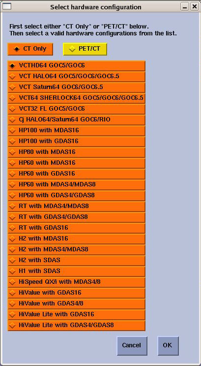
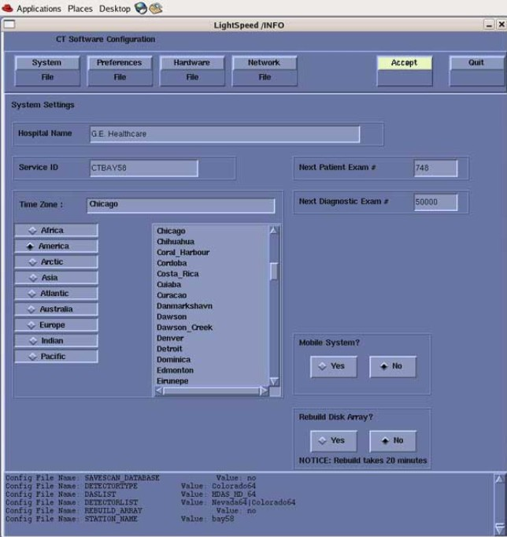

Operating Documentation
Direction 5193574-800, Rev# 22
LightSpeed 7.X Service Methods
Module Version 3.0, Version Date 8/25/14
Operating Documentation |
This procedures describes the steps necessary to manually configure System INFO.
When the System State Install INFO decision box appears (Illustration 1), click [No]. Then select: [Hardware] to access System and Console Type configuration.
Illustration 1: Install INFO Decision Box

In the Hardware Configuration window, select the appropriate hardware configuration for the System, DAS and Console type. Click [OK] when done.
Illustration 2: Hardware Configuration Window

Manually configure the Preference, Hardware, and Network Settings screens as required.
| NOTE: | Reference the GOC6 Console Information Sheet in the site
log for site specific information and Align, Setup, Cals -
Console (GOC6) - System Configuration procedure in the service
manual for more configuration details. Remember to set # of VeRBs to “1” on the Hardware Setting Screen if the console is equipped with a VeRB Computer. |
After manually configuring the system, click [Accept] and return to Applications Software Load, in the Load From Cold (LFC) procedure.
Illustration 3: System Configuration Utility - Accept Button
